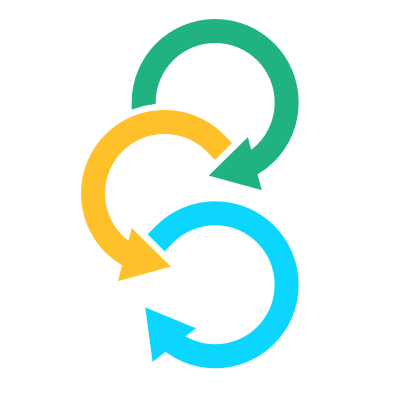
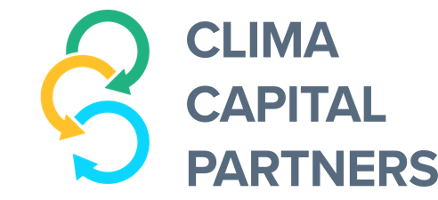

Clima Capital Partners
Introduction
Since the CIF ‘s establishment in 2008, the active engagement of observers from civil society, private sector and indigenous peoples and local communities has been an important part of the CIF’s governance structure to enable broad input, transparent communication and more effective action on the ground.
In August 2020, the Observer Selection Process for the 2021-2023 Term has been announced at the joint CIF, RESOLVE, CLIMA webinar.
Three simultaneous selection processes will be organised:
-

Private sector observers
-

Civil Society Observers
-
Edna Kaptoyo
Pastoral Communities Empowerment, Kenya
Grace BalawagTebtebba Foundation, PhilippinesIndigenous Peoples
A Joint Observers Selection Committee (JOSC) will in addition support the selection processes and learning across the three groups.
About the Climate Investment Funds (CIF)
The 8 USD billion CIF accelerates climate action by empowering transformations in clean technology, energy access, climate resilience, sustainable forests, and sustainable development in developing and middle income countries, including testing of new business models.
2.3 USD billion have been allocated to private sector projects. This is more financing than any other climate fund for private sector investments to help achieve low carbon, climate resilient economies in CIF countries.
-
8 billion
USD contributed by 14 donor countries
-
53 billion
USD in expected co-financing
-
72 countries
Climate smart investments
-
57%
CIF financing in public sector
-
43%
CIF financing in private sector
-
79%
CIF financing MDB approved
The CIF is comprised of:
- Clean Technology Fund (CTF) which facilitates investments in clean technology.
- Strategic Climate Fund (SCF) which promotes pilot projects to address the challenges of climate change. The SCF trust fund committee consists of three targeted programs:
- the Forest Investment Program (FIP)
- the Pilot Program for Climate Resilience (PPCR)
- the Scaling up Renewable Energy Program (SREP).
In addition, the recently established Global Sub-Committee includes four new climate programs, focused on renewable energy; people, nature, and climate; low carbon industries; and climate-smart cities.
There are two Private Sector Observer seats for each committee respectively program:
- one seat for a representative from a contributor country
- one seat for a representative from a beneficiary country.
Observer participation
Terms
Observer organizations will serve a three-year term, beginning in January 2021.
Observers are eligible to serve two (2) consecutive terms of three (3) years maximum. Observers wishing to serve a second consecutive term must participate in the selection process.
Responsibilities
Observers from the Civil Society Organisations (CSO), the Private Sector (PS), and Indigenous Peoples (IP) and Local Communities (LC) constituencies carry out several key roles at the CIF: constituency representation, policy advocacy, program monitoring, and outreach/communication.
These are carried out on three levels:
- actively participating on CIF’s decision-making bodies at the global level;
- participating in the formulation and monitoring of climate strategies at the national level; and
- participating in the selection and monitoring of climate project implementation at the local level.
In order to carry out these roles, observers are expected to actively communicate and liaise with their local, national, regional, and/or global constituencies to ensure that their actions and decisions as observers are guided by their constituency views and interests.
More specifically, as observers on CIF’s decision-making bodies they are responsible for: i) preparing for meetings and consulting with other stakeholders in their constituency on issues scheduled to be discussed at the CIF meetings; ii) representing the interests of their constituency, not just of their own organization; and iii) following good practice standards in terms of consulting, liaising, and keeping their constituencies informed of their CIF activities.
Participation
Individuals representing observer organizations will be expected to attend and participate actively in:
- three CIF committee meetings (virtual or in person) in 2021, 2022 and 2023.
- an orientation session,
- approximately 12 teleconferences and ‘virtual’ meetings,
- a Partnership Forum.
They will also be expected to contribute productively to the work of the CIF by responding to requests for input on documents and, when their term is completed, by serving on the advisory committee that helps to select the next set of observers.
Generally, costs associated with travel are covered for IP, CSO, LC observers from the Global South. For the private sector and observers from the Global North, costs associated with travel will be considered on a case-by-case basis.
Selection Process
Step 1: Private Sector Process
Private sector observer organizations will be selected for the CTF, the three SCF technical committees, and the Global Sub-Committees with two Private Sector Observer seats per committee.
For each committee and sub-committee, a private sector (PS) committee comprised of former CIF private sector observers will strive to identify one observer from a donor country and one observer from a borrower country.
About the Private Sector Committee
The Private Sector Committee is comprised of former CIF Private Sector observers who are experts in the fields of climate finance, the funds, and in particular the CIFs coordinated by CLIMA. The PS Committee will review applications received and will recommend a short-list of candidates to the Joint Observer Advisory Committee.
Members
- Daniel Basurto, International Chamber of Commerce (ICC) Mexico
- Crisanto Frianeza, Philippine Chamber of Commerce (JOSC borrower country representative)
- Olive Kigongo /Augustine Idoot, Uganda Chamber of Commerce
- Brian Louisy, St. Lucia Chamber
- Nurşen Numanoğlu, Turkish Industry & Business Association (TÜSİAD)
- Margaret-Ann Splawn, Climate Markets & Investment Association - CMIA (JOSC donor country representative)
Step 2: Review by Joint Observers Selection Committee
Each constituency will propose a short list of observer candidates for all CIF seats to the Joint Observers Selection Committee (JOSC).
The JOSC will take into consideration broad selection criteria related to balanced representation outlined below. Once these candidate issues are agreed by consensus, each of the JOSC representatives from each of the constituencies will make the final decision on which candidate organizations are selected to serve as CIF Observers for each constituency. The decisions will be made by consensus. If necessary, the selection committee will decide whether a candidate observer organization is primarily based in a donor or borrower country.
About the JOSC
The JOSC will provide guidance on process details, including the criteria used to guide the selection of candidates and, for the CSO process, determine voter eligibility. In addition, the JOSC members will provide input as questions arise during the selection process, help identify the candidates appearing on the ballot for each seat, and have final decision-making authority regarding the selection of observers within their own constituency groups (e.g. private sector representatives will not make decisions about the CSO observer selection process or vice versa). Decisions will be made by consensus.
Timeline
-
Step 1
Call for Applications (Sep 2020)
- Launch of observer selection process and call for applications
- Forming of Private Sector Committee (volunteering PS CIF observers)
- Communication and outreach to PS organizations
-
Step 2
Identify shortlist of candidates for each seat (Oct-Nov 2020)
- Private sector committee review of applications
- Bi-lateral outreach to further PS organizations
- Exchange with potential observers selected by the PS committee
- Recommendation of shortlist
-
Step 3
Selection of observers (Nov-Dec 2020)
- JOSC review of candidates for final approval according to balance criteria (PS members)
- Final consensus of selected nominees
- Candidates notified of selection decision
- Results announced
Selection Criteria
Step 1: Observer Eligibility Criteria
The following eligibility criteria apply to CSO, PSE, and IPOs observer organizations as well as the individuals identified to serve as the organization’s primary and alternate representatives.
- Organization Type:
Observers must be established, not-for-profit, non-governmental organizations. Eligible organizations include, but are not limited to, private sector associations, research/think tanks, advocacy groups, community based organizations, aid organizations, and youth movements. - Country Membership:
Observer organizations would preferably be based in a country which is a member of the CIF either as a ‘donor’ or ‘borrower.’ There are currently 72 member countries of the CIF and we expect this number to increase in the future. - Institutional Track Record:
Observer organization is established and has proven track record of promoting policy advocacy, providing services, undertaking research/training, and/or constituency networking. - Representational Capacity:
Observer organizations will be asked to demonstrate linkages with groups and networks at the local, national, and regional level. Individuals representing observer organizations must be willing and committed to consult with their constituency and represent the concerns and interests of their constituents – not only their own views and/or members of their own organizations, but also the larger community to whom they are accountable. - Technical Knowledge:
Observer organizations and the individuals representing those organizations must have an understanding of climate change, environmentally sustainable development, social justice issues, as well as the role and work of the climate funds. Ideally, individual observer should demonstrate knowledge of and/or expertise on issues that are central to the specific committee or sub-committee for which they are applying. - Conflict of Interest:
In order to avoid conflicts of interest, observer organizations must disclose the scope of their organizations’ financial engagement with the multilateral development banks, export credit agencies, and governments in areas relevant to CIF activities and programming. If an observer organization applies to the CIF for funding during their term, the observers will refrain from meetings in which this funding application is discussed. - Language Preference:
While provision is made for translating official meetings and documents into Spanish and French, the working language of the CIF is English. Individuals representing observer organizations must therefore have at least a working knowledge of English. - Communications Capability:
Individuals representing observer organizations must have the capacity to communicate and interact actively via the Internet and telephone. [Note: On a case-by-case basis, the CIF may provide some support for communications access.] - Primary and Alternate Representation:
Each observer organization will be expected to appoint one primary representative who will attend CIF meetings, and one alternate who can prepare for and actively participate in CIF meetings in the event the primary representative is unable to attend.
Step 2: Selection and Balance Criteria
The following criteria will be applied to the CSO, PSE, and IPO observer organizations to ensure greater balance and equanimity among the observers in terms of geographic coverage, gender balance, institutional diversity, and constituency inclusion. This process leads will conduct targeted outreach to encourage applications from organizations meeting these criteria and the criteria will be applied when the Joint Observers Selection Committee (JOSC) is making final selection decisions.
- Geographic Coverage:
The goal is to have all regions (e.g. Asia, Africa) and sub-regions (e.g. South Asia, East Africa) of the world represented across the selected set of observer organizations. In additional special effort will be made to have observers representing organizations located in CIF pilot countries. - Gender Balance:
The goal is to have an equal number of men and women among the observers. For this reason, special effort will be made to recruit and select observer organizations that are represented by women and/or that focus on women’s involvement in addressing the challenges of climate change. - Institutional Diversity:
The goal is to have different types of organizations from all three constituency sectors represented. This includes organizations of different types (e.g. NGOs, community groups, networks, associations, companies), activities (e.g., policy advocacy, research, service provision, financing, training), sizes (e.g. large, small), and which work on different levels (e.g. global, regional, national, and local). - Constituency Inclusion:
The goal is to ensure that less represented and marginalized sub-constituencies (e.g. women, youth, indigenous, people with disabilities) are represented. In addition to seeking balance across the selected observers to ensure these constituencies are represented, after the selection process concludes, focal points will be nominated for gender, youth, inclusion, and DGM. Observers may self-nominate to be the focal point for these constituencies and nominations will be backed by demonstrated expertise. - Networks:
Across the selected observers, the goal is to have connections to key local, national, regional, and global networks, including links to other climate funds and climate-related processes (e.g., UNFCCC).